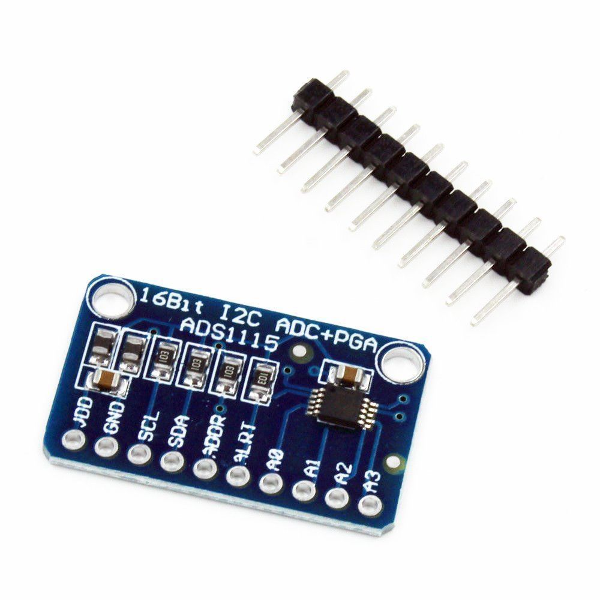

title: ADS1115 chip (I2C)
created: 2025-03-16 18:14
tags: []ADS1115 chip (I2C)

Available for about €8 (dratek)
import time
import smbus
class ADS1115:
# Default I2C address options
ADDR_GND = 0x48 # ADDR pin connected to GND
ADDR_VDD = 0x49 # ADDR pin connected to VDD
ADDR_SDA = 0x4A # ADDR pin connected to SDA
ADDR_SCL = 0x4B # ADDR pin connected to SCL
# Register addresses
REG_CONVERSION = 0x00
REG_CONFIG = 0x01
# Config register bits
# Operational status / single-shot conversion start
OS_MASK = 0x8000
OS_SINGLE = 0x8000 # Write: Set to start a single-shot conversion
OS_BUSY = 0x0000 # Read: 0 = busy, 1 = not busy
OS_READY = 0x8000 # Read: 0 = busy, 1 = not busy
# Input multiplexer configuration
MUX_MASK = 0x7000
MUX_DIFF_0_1 = 0x0000 # Differential P = AIN0, N = AIN1
MUX_DIFF_0_3 = 0x1000 # Differential P = AIN0, N = AIN3
MUX_DIFF_1_3 = 0x2000 # Differential P = AIN1, N = AIN3
MUX_DIFF_2_3 = 0x3000 # Differential P = AIN2, N = AIN3
MUX_SINGLE_0 = 0x4000 # Single-ended AIN0
MUX_SINGLE_1 = 0x5000 # Single-ended AIN1
MUX_SINGLE_2 = 0x6000 # Single-ended AIN2
MUX_SINGLE_3 = 0x7000 # Single-ended AIN3
# Programmable gain amplifier configuration
PGA_MASK = 0x0E00
PGA_6_144V = 0x0000 # ±6.144V range = Gain 2/3
PGA_4_096V = 0x0200 # ±4.096V range = Gain 1
PGA_2_048V = 0x0400 # ±2.048V range = Gain 2 (default)
PGA_1_024V = 0x0600 # ±1.024V range = Gain 4
PGA_0_512V = 0x0800 # ±0.512V range = Gain 8
PGA_0_256V = 0x0A00 # ±0.256V range = Gain 16
# Device operating mode
MODE_MASK = 0x0100
MODE_CONTIN = 0x0000 # Continuous conversion mode
MODE_SINGLE = 0x0100 # Single-shot conversion mode (default)
# Data rate (samples per second)
DR_MASK = 0x00E0
DR_8SPS = 0x0000 # 8 samples per second
DR_16SPS = 0x0020 # 16 samples per second
DR_32SPS = 0x0040 # 32 samples per second
DR_64SPS = 0x0060 # 64 samples per second
DR_128SPS = 0x0080 # 128 samples per second (default)
DR_250SPS = 0x00A0 # 250 samples per second
DR_475SPS = 0x00C0 # 475 samples per second
DR_860SPS = 0x00E0 # 860 samples per second
# Comparator mode
COMP_MODE_MASK = 0x0010
COMP_MODE_TRAD = 0x0000 # Traditional comparator with hysteresis (default)
COMP_MODE_WINDOW = 0x0010 # Window comparator
# Comparator polarity
COMP_POL_MASK = 0x0008
COMP_POL_ACTVLOW = 0x0000 # Active low (default)
COMP_POL_ACTVHI = 0x0008 # Active high
# Latching comparator
COMP_LAT_MASK = 0x0004
COMP_LAT_NONLAT = 0x0000 # Non-latching comparator (default)
COMP_LAT_LATCH = 0x0004 # Latching comparator
# Comparator queue and disable
COMP_QUE_MASK = 0x0003
COMP_QUE_1CONV = 0x0000 # Assert after one conversion
COMP_QUE_2CONV = 0x0001 # Assert after two conversions
COMP_QUE_4CONV = 0x0002 # Assert after four conversions
COMP_QUE_DISABLE = 0x0003 # Disable comparator (default)
# Conversion factor for voltage based on PGA setting
VOLTAGE_FACTORS = {
PGA_6_144V: 6.144 / 32768.0,
PGA_4_096V: 4.096 / 32768.0,
PGA_2_048V: 2.048 / 32768.0,
PGA_1_024V: 1.024 / 32768.0,
PGA_0_512V: 0.512 / 32768.0,
PGA_0_256V: 0.256 / 32768.0
}
def __init__(self, bus_num=1, address=ADDR_GND, gain=PGA_2_048V):
"""Initialize the ADS1115 ADC."""
self.bus = smbus.SMBus(bus_num)
self.address = address
self.gain = gain
self.voltage_factor = self.VOLTAGE_FACTORS[gain]
def _write_register(self, register, value):
"""Write a 16-bit value to the specified register."""
data = [(value >> 8) & 0xFF, value & 0xFF]
self.bus.write_i2c_block_data(self.address, register, data)
def _read_register(self, register):
"""Read a 16-bit value from the specified register."""
result = self.bus.read_i2c_block_data(self.address, register, 2)
return (result[0] << 8) | result[1]
def set_gain(self, gain):
"""Set the PGA gain."""
self.gain = gain
self.voltage_factor = self.VOLTAGE_FACTORS[gain]
def read_adc_single(self, channel, data_rate=DR_128SPS):
"""
Read a single-ended ADC value from the specified channel.
channel -- 0-3, the ADC channel to read
data_rate -- Data rate setting (default DR_128SPS)
Returns the ADC value as a signed 16-bit integer.
"""
if channel < 0 or channel > 3:
raise ValueError("Channel must be 0-3")
# Select the appropriate mux value
mux = self.MUX_SINGLE_0
if channel == 1:
mux = self.MUX_SINGLE_1
elif channel == 2:
mux = self.MUX_SINGLE_2
elif channel == 3:
mux = self.MUX_SINGLE_3
# Set configuration register
config = self.OS_SINGLE | mux | self.gain | self.MODE_SINGLE | data_rate | self.COMP_QUE_DISABLE
# Write configuration to the ADC
self._write_register(self.REG_CONFIG, config)
# Wait for the conversion to complete
time.sleep(1.0 / 128) # Minimum delay, adjust for the actual data rate
# Read the conversion result
return self._read_register(self.REG_CONVERSION)
def read_adc_differential(self, differential_input, data_rate=DR_128SPS):
"""
Read a differential ADC value.
differential_input -- 0-3, specifies which differential inputs to use:
0 = AIN0 and AIN1
1 = AIN0 and AIN3
2 = AIN1 and AIN3
3 = AIN2 and AIN3
data_rate -- Data rate setting (default DR_128SPS)
Returns the ADC value as a signed 16-bit integer.
"""
if differential_input < 0 or differential_input > 3:
raise ValueError("Differential input must be 0-3")
# Select the appropriate mux value
mux = self.MUX_DIFF_0_1
if differential_input == 1:
mux = self.MUX_DIFF_0_3
elif differential_input == 2:
mux = self.MUX_DIFF_1_3
elif differential_input == 3:
mux = self.MUX_DIFF_2_3
# Set configuration register
config = self.OS_SINGLE | mux | self.gain | self.MODE_SINGLE | data_rate | self.COMP_QUE_DISABLE
# Write configuration to the ADC
self._write_register(self.REG_CONFIG, config)
# Wait for the conversion to complete
time.sleep(1.0 / 128) # Minimum delay, adjust for the actual data rate
# Read the conversion result
return self._read_register(self.REG_CONVERSION)
def read_voltage(self, channel):
"""
Read voltage from the specified ADC channel.
channel -- 0-3, the ADC channel to read
Returns the voltage as a float.
"""
raw_value = self.read_adc_single(channel)
# Convert to voltage
voltage = raw_value * self.voltage_factor
return voltage
def read_differential_voltage(self, differential_input):
"""
Read differential voltage.
differential_input -- 0-3, specifies which differential inputs to use
Returns the voltage as a float.
"""
raw_value = self.read_adc_differential(differential_input)
# Convert to voltage
voltage = raw_value * self.voltage_factor
return voltage
# Example usage
if __name__ == "__main__":
# Initialize ADS1115
adc = ADS1115()
try:
while True:
# Read voltage from all channels
for channel in range(4):
voltage = adc.read_voltage(channel)
print(f"Channel {channel}: {voltage:.4f} V")
# Read differential voltage
diff_voltage = adc.read_differential_voltage(0)
print(f"Differential (0-1): {diff_voltage:.4f} V")
print("---")
time.sleep(1)
except KeyboardInterrupt:
print("Measurement stopped by user")
The it can be chained with 01aa02 Sensirion SDP810-125PA sensor to the same I2C pins:
Both devices use I2C, so they share the same SDA and SCL pins. The ADS1115 code I provided includes:
The code is thoroughly commented to help you understand how it works and how to modify it for your specific needs.
import time
import smbus
# Import the ADS1115 and SDP810 classes
from ads1115 import ADS1115
from sdp810 import SDP810
# Initialize the sensors
adc = ADS1115()
pressure_sensor = SDP810()
try:
while True:
# Read pressure from the SDP810
pressure = pressure_sensor.read_pressure()
if pressure is not None:
print(f"Differential Pressure: {pressure:.2f} Pa")
# Read voltage from the ADS1115
# Assuming you have a sensor connected to channel 0
voltage = adc.read_voltage(0)
print(f"Voltage: {voltage:.4f} V")
# You can add more code here to process the readings
# For example, convert voltage to a physical measurement
print("---")
time.sleep(1)
except KeyboardInterrupt:
print("Measurement stopped by user")
# Clean up
try:
pressure_sensor.stop_measurement()
except:
pass
The conversion code is mentioned in the 00aa01 Omron D6F-P note.